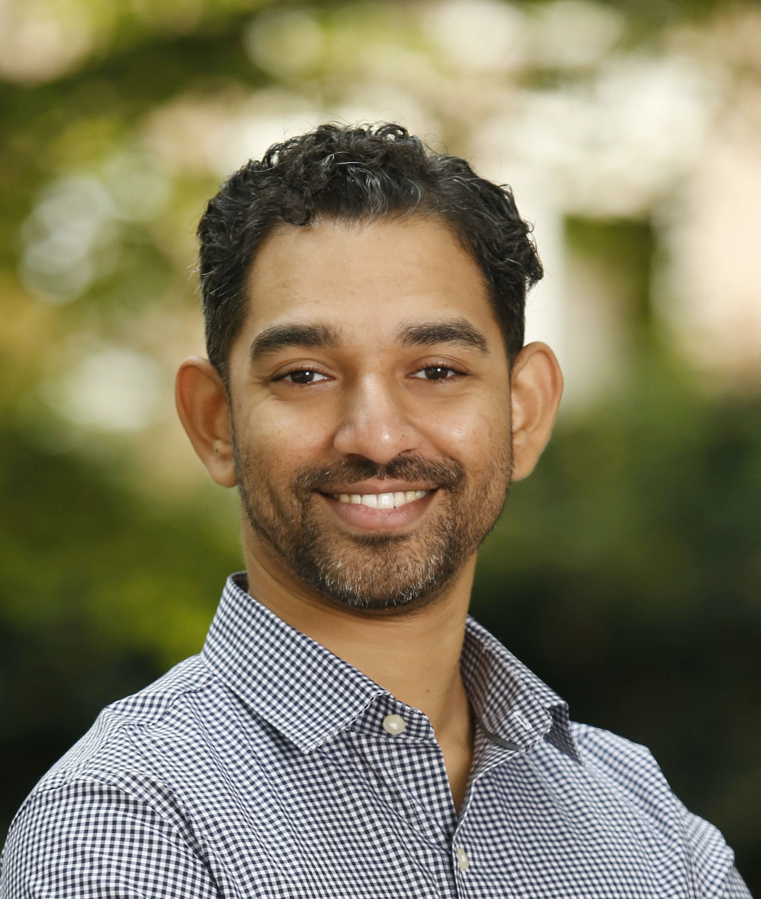
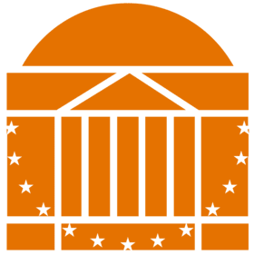
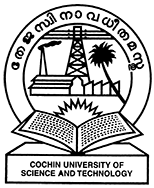
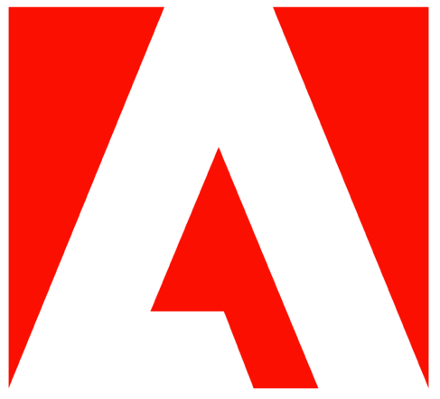

Nabeel Nasir, PhD
Assistant Teaching Professor
Computer Science
University of California, Santa Barbara
1115 Harold Frank Hall
nabeeln@ucsb.edu

I am an Assistant Teaching Professor in the Department of Computer Science at UCSB.
I received a PhD in Computer Science from the University of Virginia, and an MTech in Computer Science
from IIT Bombay.
I am passionate about teaching and broadening participation in Computer Science, and supporting undergraduate research in Cyber Physical Systems and CS Education.
I am passionate about teaching and broadening participation in Computer Science, and supporting undergraduate research in Cyber Physical Systems and CS Education.
News
- July 1, 2024: Joined UCSB as an assistant teaching faculty!
- April 17, 2024: Graduated from University of Virginia!
- March 22, 2024: Presented a paper "Experiences Teaching a Wireless for the Internet of Things Course Cooperatively at Multiple Universities" at ACM SIGCSE 2024, Portland, OR.
- May 4, 2023: Wrapped up the Wireless for IoT course which I co-taught with Prof. Brad Campbell. Check out the cool IoT wireless projects our students created here.
- May 3, 2023: Won the University of Virginia CS department's Outstanding Graduate Teaching Award!
Education
|  | PhD, Computer Science University of Virginia Adviser: Prof. Bradford Campbell |
| MTech, Computer Science Indian Institute of Technology Bombay Adviser: Prof. Krithi Ramamritham |
|
|  | BTech, Computer Science Cochin University |
Work Experience
| Enlite Research (2017 - 2018) Mumbai, India Software Developer |
|
|  | Adobe Systems (2014 - 2016) Bangalore, India Member of Technical Staff II |
Teaching
UCSB
Current
- [Fall 2024] CMPSC 32: Object Oriented Design and Implementation
Scheduled
- [Winter 2025] CMPSC 32: Object Oriented Design and Implementation
- [Spring 2025] CMPSC 32: Object Oriented Design and Implementation
- [Spring 2025] CMPSC 130A: Data Structures and Algorithms I
Prior Work
Instructor of Record
- [Spring 2023] CS/ECE 4501: Wireless for the Internet of Things
Graduate Teaching Assistant
- [Spring 2022] CS 4457: Computer Networks
- [Fall 2021] CS 4740: Cloud Computing
- [Spring 2021] CS 4414: Operating Systems
- [Fall 2020] CS 4457: Computer Networks
- [Spring 2014] CS 308: Embedded Systems Lab
- [Fall 2013] CS 684: Embedded Systems
- [Spring 2013] CS 210: Digital Logic Design Lab
- [Fall 2012] CS 101: Computer Programming Lab
Guest Lectures
- [Fall 2023] Wireless Networking and Thread Lab, CS 4501/CS 6501: Smart and Healthy Buildings
- [Fall 2022] Tutorial on Temi Robot, SYS 4582/CS 6501: Smart and Healthy Buildings
- [Fall 2021] Lecture on IoT and Edge Computing, CS 4740: Cloud Computing
- [Fall 2021] Tutorial on Temi Robot, CS 6501: CPS, Testbeds, and Policy
Publications [Google Scholar]
Untangling the Cloud from Edge Computing for the Internet of ThingsNabeel Nasir
PhD Dissertation, 2024.
Experiences Teaching a Wireless for the Internet of Things Course Cooperatively at Multiple Universities [slides]
Nabeel Nasir, Viswajith Govinda Rajan, Pat Pannuto, Branden Ghena, and Bradford Campbell
Proceedings of the 55th ACM Technical Symposium on Computer Science Education (SIGCSE), 2024.
Sensing Indoor Lighting Environments and Analysing Dimension Reduction for Identification
Tushar K Routh, Nurani Saoda, Md Fazlay Rabbi Masum Billah, Nabeel Nasir, and Bradford Campbell
1st International Workshop on Advances in Environmental Sensing Systems for Smart Cities (EnvSys), 2023.
Low Power but High Energy: The Looming Costs of Billions of Smart Devices
Wenpeng Wang, Victor Ariel Leal Sobral, Md Fazlay Rabbi Masum Billah, Nurani Saoda, Nabeel Nasir, and Bradford Campbell
HotCarbon: 2nd Workshop on Sustainable Computer Systems, 2023.
NexusEdge: Leveraging IoT Gateways for a Decentralized Edge Computing Platform [github]
Nabeel Nasir, Victor Ariel Leal Sobral, Li-Pang Huang, and Bradford Campbell
7th ACM/IEEE Symposium on Edge Computing (ACM/IEEE SEC), 2022.
Enabling Elasticity on the Edge using Heterogeneous Gateways: Poster Abstract [poster]
Nabeel Nasir and Bradford Campbell
19th ACM Conference on Embedded Networked Sensor Systems. ACM SenSys 2021.
Untangling the Cloud from Edge Computing for IoT: PhD Forum Abstract [slides]
Nabeel Nasir
19th ACM Conference on Embedded Networked Sensor Systems. ACM SenSys 2021.
An Architecture for Edge Computing over Underutilized Gateways: Demo Abstract [poster]
Nabeel Nasir and Bradford Campbell
17th ACM Conference on Embedded Networked Sensor Systems. ACM SenSys 2019.
Fusing Sensors for Occupancy Sensing in Smart Buildings
Nabeel Nasir, Kartik Palani, Amandeep Chugh, Vivek Chil Prakash, Uddhav Arote, Anand P. Krishnan, and Krithi Ramamritham
11th International Conference on Distributed Computing and Internet Technology, ICDCIT 2015.
Putting Smart Meters to Work: Beyond the Usual
Kartik Palani, Nabeel Nasir, Vivek Chil Prakash, Amandeep Chugh, Rohit Gupta, and Krithi Ramamritham
5th ACM International Conference on Future Energy Systems. ACM e-Energy 2014.
Honors and Awards
- Endowed Graduate Fellowship, UVA Engineering, 2023.
- Outstanding Graduate Teaching Award, CS Department, University of Virginia, 2023.
- UVA Teaching Fellowship, School of Engineering and Applied Science, University of Virginia, 2023.
- Best Presentation Award at the ACM SenSys/BuildSys PhD Forum, 2021.
- NSF Student Travel Grants: ACM/IEEE SEC, 2022, ACM/IEEE SEC, 2021,and ACM SenSys, 2019.
Service
- Reviewer, ACM SIGCSE TS 2025 (56th ACM Technical Symposium on Computer Science Education), Pittsburgh, Pennsylvania.
- Reviewer, ACM SIGCSE TS 2024 (55th ACM Technical Symposium on Computer Science Education), Portland, Oregon.
- Mentor, Charlottesville High School, Charlottesville. Mentored two senior high school students on their engineering capstone project. August 2023 - May 2024.
- Mentor, Computers4Kids (C4K), Charlottesville. Mentored members on Python programming and stop motion animation. July 2022 - December 2023.
- Volunteer, UVA. Designed and organized a Build an Internet workshop for middle school students at C4K, 2022.